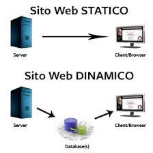
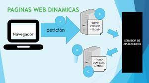
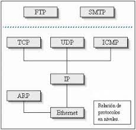
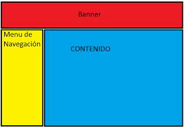
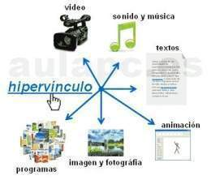
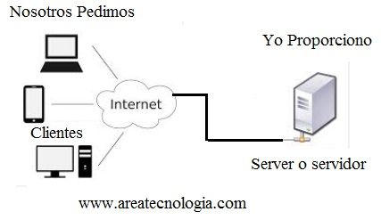
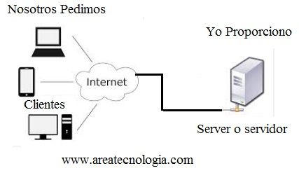

Conceptos Basicos De Wed Lenguaje HTML
HTML no es un lenguaje de programación; es un lenguaje de marcado que define la estructura de tu contenido. HTML consiste en una serie de elementos que usarás para encerrar diferentes partes del contenido para que se vean o comporten de una determinada manera. Las etiquetas de encierre pueden hacer de una palabra o una imagen un hipervínculo a otro sitio, se pueden cambiar palabras a cursiva, agrandar o achicar la letra, etc. Es un documento o información electrónica capaz de contener texto, sonido, vídeo, programas, enlaces, imágenes, hipervínculos y muchas otras cosas, adaptada para la llamada World Wide Web (WWW), y que puede ser accedida mediante un navegador web. Esta información se encuentra generalmente en formato HTML o XHTML, y puede proporcionar acceso a otras páginas web mediante enlaces de hipertexto. Frecuentemente también incluyen otros recursos como pueden ser hojas de estilo en cascada, scripts, imágenes digitales, entre otros. Las páginas web pueden estar almacenadas en un computador o en un servidor web remoto. El servidor web puede restringir el acceso únicamente a redes privadas, por ejemplo, en una intranet corporativa, o puede publicar las páginas en la World Wide Web. El acceso a las páginas web es realizado mediante una transferencia desde servidores, utilizando el protocolo de transferencia de hipertexto (HTTP).
Como Funciona
Estos son algunos de los usos más comunes de HTML:Desarrollo web. Los desarrolladores utilizan el código HTML para diseñar la forma en que un navegador muestra los elementos de la página web, como el texto, los hipervínculos y los archivos multimedia.
Navegación por Internet. Los visitantes pueden navegar fácilmente y seguir enlaces entre páginas y sitios web relacionados, ya que el HTML se utiliza en gran medida para incrustar hipervínculos.
Documentación web. HTML permite organizar y dar formato a los documentos, de forma similar a Microsoft Word.
HTML fue inventado por Tim Berners-Lee, un físico del instituto de investigación CERN en Suiza. Se le ocurrió la idea de un sistema de hipertexto basado en Internet y publicó la primera versión de HTML en 1991. Desde entonces, cada nueva versión del lenguaje HTML viene con nuevas etiquetas y atributos para el marcado. También cabe destacar que HTML es considerado ahora un estándar oficial de la web. El World Wide Web Consortium (W3C) mantiene y desarrolla las especificaciones de HTML, además de proporcionar actualizaciones periódicas. Un sitio web normal incluye varias páginas HTML diferentes. Por ejemplo, una página de inicio, una página de presentación y una página de contacto tienen archivos HTML distintos. Pero empecemos ya con lo que nos interesa. ¿Cómo se hace una página Web? Cuando los diseñadores del WWW se hicieron esta pregunta decidieron que se debían cumplir, entre otras, las siguientes características:
Característica
Pero empecemos ya con lo que nos interesa. ¿Cómo se hace una página Web? Cuando los diseñadores del WWW se hicieron esta pregunta decidieron que se debían cumplir, entre otras, las siguientes características:El Web tenía que ser distribuido: La información repartida en páginas no muy grandes enlazadas entre sí.
El Web tenía que ser hipertexto y debía ser fácil navegar por él.
Tenía que ser compatible con todo tipo de ordenadores (PCs, Macintosh, estaciones de trabajo...) y con todo tipo de sistemas operativos (Windows, MS-DOS, UNIX, MAC-OS,...).
Debía ser dinámico: el proceso de cambiar y actualizar la información debía ser ágil y rápido.
Estas características son las que marcaron el diseño de todos los elementos del WWW incluida la programación de páginas Web. Como respuesta a todos estos requisitos se creo el lenguaje HTML (HiperText Markup Language), cuyas siglas significan "lenguaje hipertexto de marcas".
Ejemplos

Conceptos Basicos Paginas Web
Una página Web es la unidad básica del World Wide Web, o simplemente Web, como se le llama comunmente. El Web está integrado por sitios web y éstos a su vez por páginas web. La gente suele confundir estos términos, pero un sitio web es en realidad un conjunto de páginas web. A manera de ejemplo, la Secretaría de Turismo en México cuenta con un sitio web que se puede visitar a través de la siguiente dirección http://www.gob.mx/sectur/ y cada tema (vínculo) que se puede consultar dentro de este sitio representa una página web.Una página de Internet o página Web es un documento electrónico adaptado particularmente para el Web, que contiene información específica de un tema en particular y que es almacenado en algún sistema de cómputo que se encuentre conectado a la red mundial de información denominada Internet, de tal forma que este documento pueda ser consultado por cualesquier persona que se conecte a esta red mundial de comunicaciones y que cuente con los permisos apropiados para hacerlo.Una página Web tiene la característica peculiar de que el texto se combina con imágenes para hacer que el documento sea dinámico y permita que se puedan ejecutar diferentes acciones, una tras otra, a través de la selección de texto remarcado o de las imágenes, acción que nos puede conducir a otra sección dentro del documento, abrir otra página Web, iniciar un mensaje de correo electrónico o transportarnos a otro Sitio Web totalmente distinto a través de sus hipervínculos.Estos documentos pueden ser elaborados por los gobiernos, instituciones educativas, instituciones públicas o privadas, empresas o cualquier otro tipo de asociación, y por las propias personas en lo individual.
Funcion
Una página web es una serie de códigos que los navegadores pueden leer. En base a la información que incluye este código, podrán mostrar la página de forma adecuada. El código le va diciendo al navegador qué partes son texto, qué partes son referencias, qué partes son imágenes.Una página web, página electrónica, página digital o ciberpágina, es un documento o información electrónica capaz de contener texto, sonido, vídeo, programas, enlaces, imágenes, hipervínculos y muchas otras cosas, adaptada para la llamada World Wide Web (WWW), y que puede ser accedida mediante un navegador web.
característica
Una página web está compuesta principalmente por información de un tema factible (solo texto o módulos multimedia) así como por hiperenlaces; además puede contener o asociar hoja de estilo, datos de estilo para especificar cómo debe visualizarse, y también aplicaciones embebidas para así permitir interacció.
Páginas web son escritas en un lenguaje de marcado que provee la capacidad de manejar e insertar hiperenlaces, generalmente HTML>. a la estructura de las páginas web, algunos organismos, en especial el World Wide Web Consortium (W3C), suelen establecer directivas con la intención de normalizar el diseño, y para así facilitar y simplificar la visualización e interpretación del contenido.
Ejemplos
La forma de lograrlo es con un sitio web que conecte con los usuarios y los invite a explorar los servicios o productos que ofreces. El que las personas se queden depende de muchos factores, incluyendo el tiempo de carga de una página y el diseño de la misma. Piénsalo así: si no te gusta cómo se ve una página, difícilmente te quedarás a seguir leyendo. Por eso te traemos un listado de sitios web de empresa y personales que te inspirarán a crear el tuyo.
Malvestida
Giphy

Conceptos Basicos Pagina Esticas,Dinamicas
Pagina Esticas
Una página web estática está compuesta por archivos HTML individuales por cada página que son pre-generados y presentados al usuario a través del navegador de la misma forma. Como una página web estática básica está compuesta por elementos como títulos, cuadros de textos, etiquetas, imágenes y otros elementos multimedia, un usuario solo puede interactuar con una página web estática a través de lo que permiten los elementos HTML, por ejemplo haciendo clic en enlaces, botones o rellenando formularios como el clásico formulario de subscripción. No son tan complejos técnicamente como un sitio web dinámico, pero tampoco son tan versátiles y efectivos cuando se trata de entregar funcionalidad. En pocas palabras, en una página web estática, verás la misma información, diseño y contenido cada vez que la visites, a menos que alguien aplique cambios al código fuente de forma manual.
Característica
Una página web estática es un documento adaptado a la web que proporciona un contenido fijo a todos los usuarios, es decir, es un sitio de internet que no modifica su contenido para personalizarlo y adaptarlo a cada interacción. Por tanto, son páginas que no se actualizan constantemente. También se conocen como páginas plana
Funcion
La principal función de una página web estática es presentar una información estable que no es necesario modificar con frecuencia. Por poner un ejemplo claro, se pueden crear páginas web estáticas para informar sobre la dirección de un negocio, para detallar los servicios fijos que ofrece, para contar la historia y la trayectoria de la empresa, etc.
Ejemplos
Pagina Dinamicas
Por lo tanto, la mayoría de las páginas que regularmente visitas es probable que sean dinámicas porque son interactivas. Por ejemplo, una página web dinámica te permite crear un perfil de usuario Facebook.com, comentar una publicación LinkedIn.com, pedir tu cena just-eat.es o hacer una reserva Booking.com. Siguiendo el ejemplo de la página que muestra una fecha, si queremos convertirla en una página web dinámica, podemos cambiar la fecha escrita textualmente por una función que retorne la fecha actual
Característica
Las principales características de las páginas web dinámicas son las siguientes: Emplean diferentes lenguajes de programación. La estructura de estas aplicaciones es más compleja. Se administran desde un CMS (content management system). Estos paneles de administrador posibilitan que cualquiera pueda actualizar las aplicaciones de forma sencilla, sin tener que depender constantemente de un especialista. No requieren entrar a un servidor para modificarlas. Los cambios o actualizaciones se pueden llevar a cabo en tiempo real desde el panel de administrador
Funcion
Una página web estática presenta información fija que solo se puede cambiar con la ayuda de un programador. Modificar estas aplicaciones requiere un esfuerzo considerable, ya que para cambiar algo en ellas el programador tiene que reconstruir y recargar en el servidor toda la página. Sin embargo, las aplicaciones web dinámicas son perfectas para las personas o las empresas que necesitan actualizar constantemente sus aplicaciones web pero no saben nada de desarrollo ni de lenguajes de programación.
Ejemplos
Conceptos Basicos Protocolos Ip
Un protocolo es un conjunto de normas que rigen el funcionamiento de las cosas en una determinada tecnología, por lo que de esta forma se consigue que exista algún tipo de estandarización. Cuando hablamos de comunicaciones de red, un protocolo es el conjunto de normas que rigen cómo los paquetes de comunicación se transmiten a través de la red. Cuando tienes un protocolo, puedes estar seguro de que todas las máquinas de una red (o del mundo, cuando se trata de Internet), por muy diferentes que sean, hablan el mismo idioma y pueden integrarse en cualquier sistema. Desarrollado durante la década de 1970, el protocolo IP es el protocolo de red fundamental usado a través de Internet, las redes domésticas y las redes empresariales. El protocolo IP se utiliza a menudo junto con el protocolo de control de transporte (Transport Control Protocol o TCP) y entonces se les llama de manera intercambiable tanto protocolo IP como protocolo TCP/IP.
Característica
Las características básicas del protocolo IP son las siguientes:
Sin conexión: no se establece ninguna conexión con el destino antes de enviar los paquetes de datos.
Máximo esfuerzo (no confiable): la entrega de paquetes no está garantizada.
Independiente de los medios: la operación es independiente del medio que transporta los datos.
Funcion
Los datos en el protocolo IP están organizados en mensajes. Estos mensajes se denominan muchas veces paquetes y algunas veces datagramas, pero en términos sencillos todos ellos se refieren más o menos al mismo concepto. Cada datagrama IP incluye tanto una cabecera (que especifica origen, destino, y otra información acerca de los datos) como los propios datos del mensaje.
Ejemplos
Conceptos Basicos navegadores(browser)
Es un programa que permite ver la información que contiene una página web. El navegador interpreta el código, HTML generalmente, en el que está escrita la página web y lo presenta en pantalla permitiendo al usuario interactuar con su contenido y navegar. Es de vital importancia contemplar los distintos navegadores con los que los usuarios van a utilizar nuestras páginas. En teoría, los estándares web publicados por el W3C deberían permitir que las páginas fueran visualizadas exactamente igual en todos los navegadores. La realidad, sin embargo, es distinta: Cada navegador (especialmente, Internet Explorer) implementa diferencias que pueden hacer necesario el uso de técnicas "especiales" para que nuestros portales se muestren de la misma forma en todos los navegadores.
Característica
Todos los navegadores incluyen la mayoría de las siguientes características: navegación por pestañas, bloqueador de ventanas emergentes, soporte para motores de búsqueda, gestor de descargas, marcadores y atajos del teclado. Para mantener la privacidad casi todos los navegadores ofrecen maneras sencillas de borrar cookies, cachés web y el historial. Las suites de Internet son aquellos exploradores web que incluyen programas integrados capaces de leer noticias de Usenet, correos electrónicos, e IRC, que son chats de texto en tiempo real a través de los protocolos IMAP, Suelen utilizar el protocolo de seguridad HTTPS a través de los protocolos criptográficos SSL/TLS para proteger los datos de intercambio con los servidores web. También suelen contar con protección antiphishing y antimalware.
Funcion
La funcionalidad básica de un navegador web es permitir la visualización de documentos de texto, posiblemente con recursos multimedia incrustados. Los documentos pueden estar ubicados en la computadora en donde está el usuario, pero también pueden estar en cualquier otro dispositivo que esté conectado a la computadora del usuario o a través de Internet, y que tenga los recursos necesarios para la transmisión de los documentos (un software servidor web). Tales documentos, comúnmente denominados páginas web, poseen hipervínculos que enlazan una porción de texto o una imagen a otro documento, normalmente relacionado con el texto o la imagen. El seguimiento de enlaces de una página a otra, ubicada en cualquier computadora conectada a la Internet, se llama navegación, de donde se origina el nombre navegador (aplicado tanto para el programa como para la persona que lo utiliza, a la cual también se le llama cibernauta). Por otro lado, hojeador es una traducción literal del original en inglés, browser, aunque su uso es minoritario.Ejemplos
Conceptos Basicos hoja de estilo
Las hojas de estilo representan un avance importante para los diseñadores de páginas web, al darles un mayor rango de posibilidades para mejorar la apariencia de sus páginas. En los entornos científicos en que la Web fue concebida, la gente estaba más preocupada por el contenido de sus páginas que por su presentación. A medida que la Web era descubierta por un espectro mayor de personas de distintas procedencias, las limitaciones del HTML se convirtieron en fuente de continua frustración, y los autores se vieron forzados a superar las limitaciones estilísticas del HTML. Aunque las intenciones han sido buenas -- mejorar la presentación de las páginas web --, las técnicas para conseguirlo han tenido efectos secundarios negativos. Entre estas técnicas, que dan buenos resultados para algunas personas, algunas veces, pero no siempre ni para todas las personas, se incluyen:
Utilización de imágenes para controlar el espacio en blanco
La utilización de tablas para la organización de las páginas
Escribir programas en lugar de usar HTML
Característica
Una hoja de estilo es una etiqueta que lleva a aparejada una serie de características de modo que cuando esa etiqueta se aplica a un grupo de textos, estos toman esas características; por ejemplo, si tenemos una hoja de estilo llamada "Texto grande", con las características de "Cuerpo 10 pt, color rojo", al aplicarla a un texto, ese tomará todas esas características.Funcion
Las hojas de estilo permiten liberar la composición del texto de los aspectos visuales y favorecen que se estructure y anote mediante códigos que permiten un tratamiento más eficaz de los contenidos. El uso adecuado de las hojas de estilo es uno de los aspectos clave de la edición digital. Las hojas de estilo son una herramienta de gran utilidad de los programas de tratamiento de textos, como OpenOffice.org o Microsoft Word. Asimismo, constituyen una parte esencial de los lenguajes de marcas para edición digital: LaTeX, XML y XHTML. Dos lenguajes de hojas de estilo son CSS y XSL.
Ejemplos


Conceptos Basicos Tablas
En documentos HTML una tabla puede ser considerada, resumidamente, como un grupo de filas donde cada una contiene a un grupo de celdas. Esto es conceptualmente distinto a un grupo de columnas que contiene a un grupo de filas, y esta diferencia tendrá un impacto en la composición y comportamiento de la tabla. Como muchas otras estructuras de HTML, las tablas son construidas utilizando elementos. En particular, una tabla básica puede ser declarada usando tres elementos, a saber, table (el contenedor principal), tr (representando a las filas contenedoras de las celdas) y td (representando a las celdas). Dejémoslo más claro con un ejemplo:
Característica
Tablas de diseño reducen la accesibilidad para los usuarios con discapacidad visual: Los lectores de pantalla que utilizan las personas con visibilidad reducida interpretan las etiquetas de una página HTML y leen su contenido para el usuario. Puesto que las tablas no son la herramienta adecuada para el diseño y el marcado es más complejo que con las técnicas de diseño CSS, la salida de los lectores de pantalla será confusa para estos usuarios.
Las tablas generan estructuras incorrectas: Como ya se mencionó, los diseños de tabla suelen involucrar estructuras de marcado más complejas que las técnicas de diseño. Esto puede dificultar la escritura, el mantenimiento y la depuración del código.
Ejemplos
.jpg)

Conceptos Basicos Plantillas (template)
También conocido como template o theme, en inglés, es una base prediseñada a la cual se puede personalizar la información básica, imágenes, colores, logotipo, ubicación de los elementos visuales Estas plantillas son diseños realizados por empresas, diseñadores webs, programadores o agencias; donde su objetivo es vender una especie de licencia de uso; aunque hay algunas plantillas que son gratuitas, pero con funciones limitadas. La idea de usar la plantilla es que proporcionan una estructura clara, la ubicación de cada elemento, con una curva de aprendizaje baja, ahorra tiempo y crear páginas webs dentro de un molde con parámetros definidos, sin comenzar desde 0.
Característica
La principal característica de una plantilla es que al utilizarla se crea un documento Word normal con los datos introducidos en ese momento y la plantilla permanece en su estado original, de forma que la podemos utilizar cuantas veces queramos. Un ejemplo de plantilla es Normal.dotx. Cada vez que abrimos un documento nuevo estamos utilizando la plantilla Normal.dotx
Funcion
Una plantilla puede sernos útil cuando usamos muchas veces un documento con la misma estructura. Por ejemplo, para mandar faxes, el documento será siempre muy parecido, ya que tendrá títulos para identificar al autor, la dirección, el remitente, el asunto, etc.
Ejemplos
.jpg)
Conceptos Basicos Marcos (Frames)
Frames (en inglés, marcos o cuadros) es un procedimiento del lenguaje HTML para dividir la pantalla en diferentes zonas, o ventanas, que pueden actuar independientemente unas de otras, como si se trataran de páginas diferentes, pues incluso cada una de ellas pueden tener sus propias barras deslizadoras. Los navegadores que lo implementan son a partir del Netscape 2.0, y el Explorer 2.0 en adelante. Una de sus características más importantes es que pulsando un enlace situado en un frame, se puede cargar en otro frame una página determinada. Esto se utiliza frecuentemente para tener un frame estrecho en la parte lateral (o superior) con un índice del contenido en forma de diferentes enlaces, que, al ser pulsados cargan en la ventana principal las distintas páginas. De esta manera se facilita la navegación entre las páginas, pues aunque se vaya pasando de unas a otras, siempre estará a la vista el índice del conjunto. Para comprender los distintos conceptos vamos a desarrollar un ejemplo, creando una página con dos frames. El de la izquierda va a servir de índice de lo que veamos en el de la derecha, y en éste veremos inicialmente una página de presentación. Se podrá acceder también aquí a la página personal creada con anterioridad, si se pulsa un enlace en el frame de la izquierda.
Característica
En el ejemplo de frame 5 la imagen en el frame superior no entro completa, por lo que aparece la barra de desplazamiento, en este ejemplo no es nesesaria la barra de desplazamiento, además le quita presentación o vista a nuestra página. Esto se puede soluciónar de dos formas: La 1ra. agregando el atributo SCROLLING="no" dentro de la directiva del frame en que se desee desaparecer la barra de despalazamiento, y la 2da. colocando la imagen en lugar de la página que la contenga dentro del frame
Funcion
Para crear una página web dividida en frames usaremos la etiqueta HTML frameset, y dentro de ella insertaremos una etiqueta frame por cada marco que deseemos crear, así como la etiqueta noframes, cuyo contenido se mostrará en los navegadores web que no soportan frames.
Ejemplos
Conceptos Basicos Hipervinculos locales y externos
Un hipervínculo es un enlace, normalmente entre dos páginas web de un mismo sitio, pero un enlace también puede apuntar a una página de otro sitio web, a un fichero, a una imagen, etc. Para navegar al destino al que apunta el enlace, hemos de hacer clic sobre él. También se conocen como hiperenlaces, enlaces o links. Normalmente el destino se puede saber mirando la barra de estado del navegador cuando el ratón esté sobre el hipervínculo. Dependiendo de cual sea el destino , hacer clic en un hipervínculo puede hacer que ocurran varias cosas. Si el destino es otra página web, el navegador la cargará y la mostrará, pero si el destino es un documento de Word, el navegador nos dará la posibilidad de abrir una sesión de Word para visualizarlo o de guardar el archivo.
Hipervínculo local o interno: Un hipervínculo local o interno es un vínculo a una página que se encuentra en el mismo sitio web (sitio local). Así, para referirnos a ella tan solo basta con poner la ruta o dirección en el disco duro. Si se encuentra en la misma carpeta, basta con poner su nombre. Por ejemplo, supongamos que tenemos un vínculo desde esta página a otra llamada curso que está en la carpeta access . El vínculo sería: access/curso.htm
Hipervínculo externo : Un hipervínculo externo es un vínculo a otro sitio web en Internet (sitio externo). Es un vínculo a cualquier otro lugar fuera del sitio actual. Cuando ponemos un vínculo externo, escribimos la dirección completa de la página incluido http://www....
Característica
Un hipervínculo tiene tres características que lo definen:
Hacía dónde va: destino
El tipo de vínculo: Si se origina en un texto o imagen, si abrirá en otra página o la misma página, entre otros.
Funcion
Para utilizar un hipervínculo, solo debes hacer clic sobre él, esto activa el comando que salta dentro del mismo documento o carga el documento destino, llevándote a un destino por medio de un enlace. Un enlace, también llamado hiperenlace, vínculo o hipervínculo, se define como un elemento de un documento electrónico que hace referencia a otro documento o a un punto específico de sí mismo o de otro documento. Los hipervínculos locales o marcadores son enlassssces dentro de la misma página. Es decir, al hacer clic en uno de ellos nos llevará a una posición distinta dentro de la misma página que estamos visualizando.
Ejemplos
Conceptos Basicos software de edicion de sitios web
Un editor de páginas web es una aplicación diseñada con el fin de facilitar la creación y edición de documentos HTML o XHTML. Su complejidad puede variar desde la de un simple editor de texto plano, entornos WYSIWYG, hasta editores WYSIWYM.
Característica
Editor de texto sin formato
Editor de texto con ventanas
Editores WYSIWYG
Funcion
Es una aplicación diseñada con el fin de facilitar la creación y edición de documentos HTML o XHTML. Su complejidad puede variar desde la de un simple editor de texto plano, entornos WYSIWYG, hasta editores WYSIWYM
Ejemplos
.jpg)
.jpg)
Servidor
Un servidor web es un software y un hardware que utiliza el protocolo HTTP (Hypertext Transfer Protocol) y otros protocolos para responder a las peticiones de los clientes realizadas a través de la World Wide Web. La principal función de un servidor web es mostrar el contenido de un sitio web almacenando, procesando y entregando las páginas web a los usuarios. Además de HTTP, los servidores web también soportan SMTP (Simple Mail Transfer Protocol) y FTP (File Transfer Protocol), utilizados para el correo electrónico, la transferencia de archivos y el almacenamiento.
Característica
Los servidores web suelen formar parte de un paquete más amplio de programas relacionados con internet e intranet que se utilizan para
enviar y recibir correos electrónicos;
descargar solicitudes de archivos del Protocolo de Transferencia de Archivos (FTP);
crear y publicar páginas web
Funcion
Al software del servidor web se accede a través de los nombres de dominio de los sitios web y garantiza la entrega del contenido del sitio al usuario que lo solicita. El lado del software también está formado por varios componentes, con al menos un servidor HTTP. El servidor HTTP es capaz de entender HTTP y las URL. Como hardware, un servidor web es una computadora que almacena el software del servidor web y otros archivos relacionados con un sitio web, como documentos HTML, imágenes y archivos JavaScript.
Ejemplos
.jpg) 

Conceptos Basicos dominio
Dominio web también conocido como domain en inglés, es una dirección o nombre alfanumérico único que se caracteriza por ser fácil de recordar, utilizado para identificar un sitio en internet, ya sea servidor de correo electrónico o un servidor web. Estos dominios le permiten a los usuarios de internet o de la red escribir un nombre determinado para luego poder identificar una dirección electrónica formada por números, es decir que por medio se la utilización de dichos dominios, los usuarios de la red pueden hallar sitios web y enviar correos electrónicos sin tener que recordar las direcciones numéricas, que realmente son estas las que logran la localización de los servicios de internet y las computadoras.
Característica
El dominio es la dirección de la página, con la cual las personas nos pueden encontrar, no es una necesidad, es una obligación de todo sitio en internet para poder estar en la red, de lo contrario no se puede hacer nada.
Funcion
Un dominio web es el equivalente a una dirección postal de tu sitio web. Constan de un nombre de sitio web (como, Hostinger) y una extensión de nombre de dominio (por ejemplo, .com). Todos los registros de dominio son supervisados por la ICANN. Funcionan reenviando los visitantes al servidor apropiado
Ejemplos
.jpg)
Conceptos Basicos Alojamiento y publicacion
El alojamiento web (en inglés web hosting) es el servicio que provee a los usuarios de Internet un sistema para poder almacenar información, imágenes, vídeo, o cualquier contenido accesible vía web. Es una analogía de «hospedaje o alojamiento en hoteles o habitaciones» donde uno ocupa un lugar específico, en este caso la analogía alojamiento web o alojamiento de páginas web, se refiere al lugar que ocupa una página web, sitio web, sistema, correo electrónico, archivos etc. en internet o más específicamente en un servidor que por lo general hospeda varias aplicaciones o páginas web.
Característica
Buscar «nombre_empresa sucks» en Google y leer opiniones de usuarios descontentos.
Realizar un ping a los servidores del proveedor y medir el tiempo de respuesta. Mientras menor sea éste, mejor tiempo de respuesta tendrá nuestra web desde la ubicación en la que nos encontramos.Buscar «nombre_empresa reviews» en Google y leer las opiniones, tanto favorables como negativas.
Aunque un plan pueda parecer muy interesante y sin limitaciones, hay que echar un vistazo al límite de consumo de CPU, que puede ser un límite que pasa inadvertido en muchos casos.
Probar a contactar con el servicio de atención al cliente y observar cuanto tardan y responder y cómo lo hacen.
Funcion
Un servidor es una computadora física que funciona ininterrumpidamente para que tu sitio web esté disponible todo el tiempo para cualquier persona que quiera verlo. Tu proveedor de alojamiento es el responsable de mantener el servidor en funcionamiento, protegerlo de ataques maliciosos y transferir tu contenido (como texto, imágenes, etc) desde el servidor a los navegadores de tus visitantes.
Ejemplos

Conceptos Basicos Solucion web
Estas soluciones son un conjunto de servicios destinados a proporcionar una alta visibilidad en internet, un diseño atractivo, sencilla navegabilidad, una alta conversión visita-cliente y accesibilidad desde dispositivos móviles. Y es que nuestro desarrollo web a través del CMS permite gestionar con facilidad cualquier cambio necesario para su sitio. Dichos cambios consisten en modificar sus imágenes, cambiar o añadir textos, estructurar de forma más clara el diseño web para facilitar la navegación y crear nuevos apartados o servicios que ofrecer a sus clientes y hasta incluir enlaces.
Característica
Creatividad y Usabilidad
Establecer el objetivo u objetivos de la Web
Identificar y definir el público objetivo
Analizar las características de los productos y servicios
Funcion
Ofrecer información a los usuarios, tanto respecto a la empresa como respecto a los productos y servicios del CLIENTE.Dar a conocer nuevos productos, crear notoriedad de marca, comunicar ventajas competitivas, facilitar la solicitud de información y/o crear un canal de venta de productos
Interactividad con el usuario para recabar información útil para los objetivos de marketing del CLIENTE, además de fidelizar al usuario con un contacto directo y periódico mediante la creación de comunidades (portales).
Ejemplos
.jpg)
Conceptos Basicos Plataforma web
Las plataformas digitales o plataformas virtuales, son espacios en Internet que permiten la ejecución de diversas aplicaciones o programas en un mismo lugar para satisfacer distintas necesidades. Cada una cuenta con funciones diferentes que ayudan a los usuarios a resolver distintos tipos de problemas de manera automatizada, usando menos recursos.
Característica
Te ahorran tiempo
Te permiten trabajar con un equipo reducido
Es fácil medir su desempeño
Funcion
El principal objetivo que cumplen las plataformas digitales es facilitar la ejecución de tareas a través de programas o aplicación en un mismo lugar en la web. Como existe una gran variedad de plataformas digitales, los objetivos específicos de cada una de ellas varían de acuerdo con la necesidad de los usuarios
Ejemplos